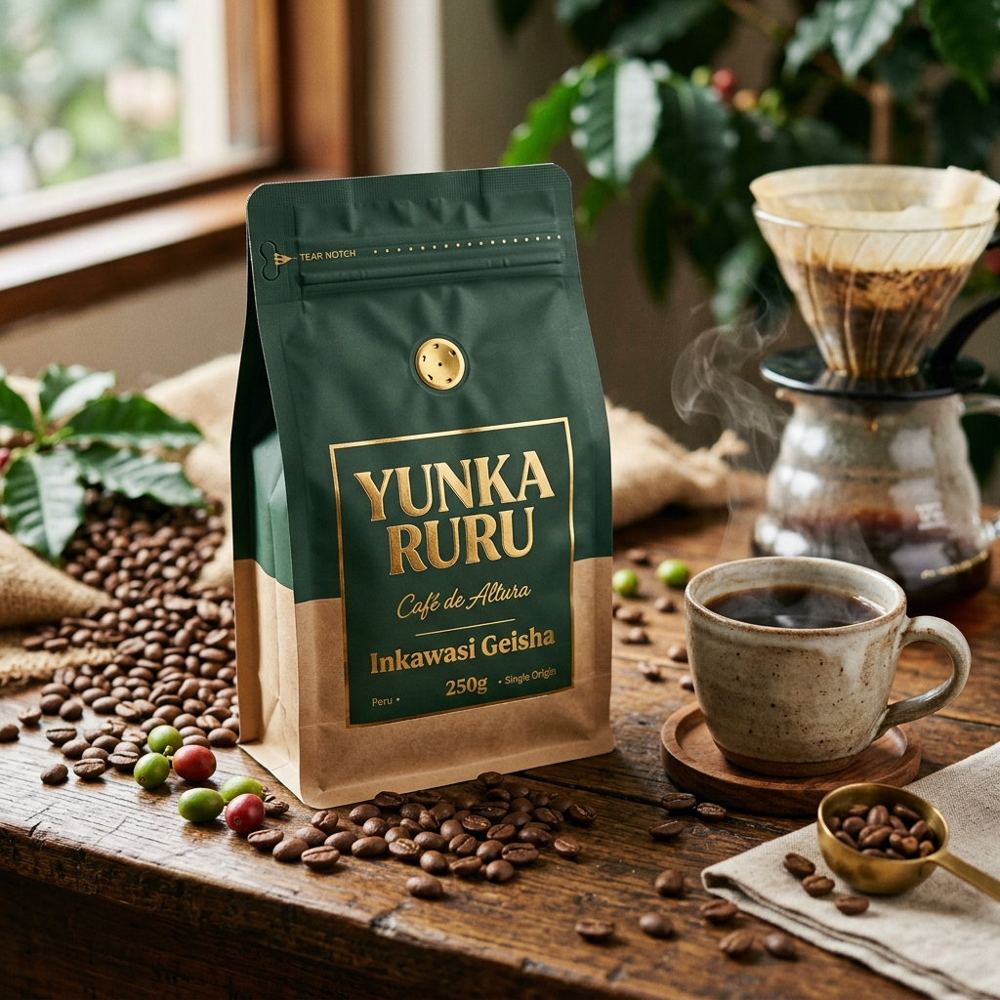

1900 - 2200 msnm
Café de Especialidad
Café de Altura
Variedades: Geisha y Típica
Proceso: Lavado 100% Natural
Presentación: Grano Entero 250 gr
Café cultivado en alturas extremas con notas florales a jazmín, frutas de hueso y acidez brillante que cautiva en taza.